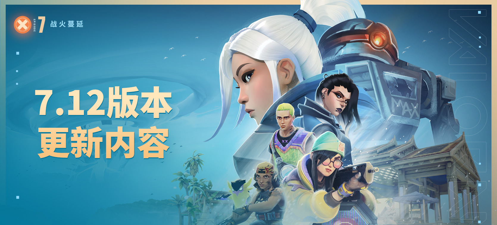

瓦罗兰特最新英雄壹决已于11月1日在正式服上新，赶快搜索瓦罗兰特首页，下载全新游戏吧！
英雄搭配
《无畏契约》的英雄多达23个，根据每队5人的玩法规则，你拥有着C 23 5种组合可以选择。但是你需要注意，并非所有组合都是最佳搭配。对于游戏小白玩家来说，也许控场角色强大的视线阻挡技能比不上决斗英雄强力的输出技能；但是在高端局中，当所有玩家都拥有着不相上下的枪法、不分高低的意识时，一面水墙、一团沙尘暴却能迟缓他们的行动，封堵他们的进攻路线，为爆能器的倒计时缩短决定胜负的几秒钟。个人表现固然重要，但可千万不要忘记这是一个团队游戏！
©2023.12.8 - HEROES